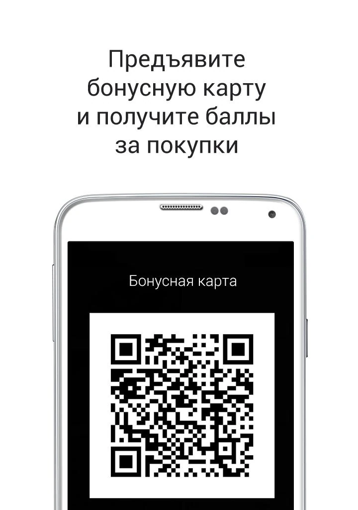

Android · Maps
GeomirAgro
Field maps and crop inspections for agronomists, even when they’re offline.
View projectDeveloper portfolio
I’m Andrei Lipskii. For over a decade I’ve been building apps for Android, from maps that work offline to television and augmented reality.
More about meField maps and crop inspections for agronomists, even when they’re offline.
View projectA TV app for browsing programmes and watching them on demand.
View projectAn app for estate agents to find and reserve apartments in new developments.
View projectPush-to-talk radio, emergency calls and dispatcher contact on Zebra handhelds.
View projectA tool shop where customers can search the catalogue, check prices and place orders.
View projectA sports community app for the Norwegian market.
View projectA multiplayer quiz game our team built in Unity.
View projectRetail apps for earning points, redeeming rewards and finding personalised offers.
View projectMobile AR reconstructions of historic sites, from the Bastille to the cruiser Aurora.
View projectAndrei
Lipskii
Android developer
Saint Petersburg · Working remotely
I build apps that people can keep using when they lose their internet connection.
For more than five years I worked on GeomirAgro. An agronomist can flag a problem in the field, attach a photo and carry on. When the connection returns, the app sends the inspection to the server. I built that workflow from the on-device database to the screens written in Kotlin.
Earlier, I built a media library for Android TV, apps for Zebra handhelds and historical AR reconstructions in Unity.
Android · Maps
An agronomist can lose signal halfway through a field inspection. The app saves the findings on the device and syncs them with the server once the connection returns.
I built the field inspection and task modules, from the database schema to the user interface. I designed local storage with Room and SQLite, maintained database migrations and tuned SQL queries for large datasets.
I worked on sync, caching and maps built with Mapbox. I also refactored existing modules while continuing to ship new features.
Kotlin · Room / SQLite · Coroutines / Flow · Mapbox · WorkManager


Android TV · Media
Viewers can browse the programme catalogue, pick a show and start watching on their TV.
I built the media galleries and sorting controls, and integrated ads into the video player. I worked with another Android developer to refine the viewing experience, fix bugs and prepare releases.
Kotlin · Android TV · REST API
Android · Real estate
Estate agents can choose a building and floor, inspect an apartment’s layout and proceed to a reservation.
I built the lists that connect the different levels of the catalogue, along with floor plans, filters and sorting. I developed the sign-in screen and contributed to the reservation flow. We wrote tests before implementing features and reviewed each other’s code.
Kotlin · MVP · REST API · Unit Tests
Android · Industrial devices
Push-to-talk radio, emergency calls and dispatcher contact on Zebra handhelds.
On a team of three Android developers, I built screens for push-to-talk radio, emergency SOS calls and dispatcher contact. I worked on maps and navigation and integrated the built-in barcode scanner on Zebra industrial handhelds.
Java · Android SDK · Zebra SDK
Android · Retail
A tool shop where customers can search the catalogue, check prices and place orders.
I built catalogue screens and product pages, including search, filters and sorting. I worked on dynamic pricing, kept product information up to date with the server and maintained the mobile checkout.
Java · Retrofit · REST API
Android · Communities
A sports community app for the Norwegian market.
I developed Android features for a client serving the Norwegian market. As part of a Scrum team, I estimated tasks, planned sprints and demonstrated our work to the client.
Java · Android SDK
Unity · Games
A multiplayer quiz game our team built in Unity.
I helped develop a commercial trivia game in Unity. It was one of several projects our team was building in parallel for external clients.
Unity3D


Android · Retail
Retail apps for earning points, redeeming rewards and finding personalised offers.
I built registration and sign-in, along with news, offers, discounts and rewards screens for several retailers. I integrated push notifications and maintained the apps’ communication with the server.
Java · Android SDK · REST API
Unity · Augmented reality
Mobile AR reconstructions of historic sites, from the Bastille to the cruiser Aurora.
I worked on four mobile reconstructions: the cruiser Aurora, the Bastille, Pompeii and the Road of Life. I built scenes and interactions with virtual objects, added historical information and multimedia, and integrated AR libraries across devices, including Google Glass.
Unity3D · C# · Vuforia · Google Glass SDK